|
|
||||||||||||||
since2012/04/23 |
 |
|
||||||||||||
 |
|
|
|
|
||||||||||
|
|
|
|
|
|||||||||||
|
|
|
|
||||||||||||
|
|
|
|
|
|
|
|
|
|
|
|
|
|
|
|
Mandrake 系统设定工具：drakconf
Red Hat 基本系统设定指令： setup,
/etc/sysconfig/*
系统启动服务工具： ntsysv, service, chkconfig, init,
本章习题练习
基础设定工具
我们在 Linux 系统开机流程的说明中提及了相当多次的系统配置文件案所在的目录，那就是 /etc/sysconfig 这个目录啰，您可以手动的修改一下该目录里面的各个档案，以使符合您的系统环境！底下我们会介绍关于这个目录底下各个档案所代表的意义啦！
由于这本书当中尚未提到关于网络架设的部分(若还写下去的话，那么这本书也就太重了…)，所以我们先以简单的方式来说明一下如何设定网络方面的功能，这个时候，每个 distribution 所提供的一些好用的小工具软件，就得给他了解一下的啦！底下我们分别介绍一下目前最流行的两套 distribution 的工具，分别是 Mandrake 与 Red Hat 的两个小工具呦！
Mandrake 系统设定工具：
在 Mandrake Linux 里头已经有一个相当好用的系统参数设定工具，那就是大家都耳熟能详的『 drakconf 』啰！这工具说穿了也没有什么特殊的地方，就是他将一些 /etc/sysconfig 里的设定参数给他做成图形界面就是了！基本上，如果你对系统熟的话，那么不需要使用 drakconf 也是可以的啦！直接修改 /etc/sysconfig 底下的东西就可以啰！好吧，闲话不多说，我们就来看一看 drakconf 的功能吧！在你输入 [root @test root]# drakconf 之后，就会出现底下的图样：
- 属性相依的套件需求：
如果您当初使用的安装方法是比较小的安装方式，例如鸟哥都不安装图形接口的，好让我那小的可怜的硬盘还可以被拿来当作数据备份之用…这个时候，很可能 drakconf 就没有被您安装上来啰！此时，请将您的 Mandrake 9.0 的 CD 1 拿出来，给他放入光驱当中，并且挂载上来，再使用 RPM 的方法，安装一下底下的各个套件：
userdrake-0.5-3mdk.i586.rpm
menudrake-0.7.1-3mdk.i586.rpm
rxvt-2.7.8-5mdk.i586.rpm
harddrake-ui-1.1.9-53mdk.i586.rpm
drakcronat-0.1.2-9mdk.noarch.rpm
drakconf-9.0-6mdk.i586.rpm
玩过了前面几章之后，千万不要不晓得我上面讲的是什么内容….如果忘记了，请回到前面的章节，并且『仔细的，好好的再看一遍』吧！这样安装完毕之后，就会有 drakconf 在你的系统当中啰！如果您想要知道你的 Linux 系统当中有没有 drak 为开头的指令要怎么寻找？别担心！回到第三部分讲 Shell 的地方，还记得 BASH 里面关于 <tab> 按键的用途吧！呵呵！试试看就知道会发生什么事情啰！
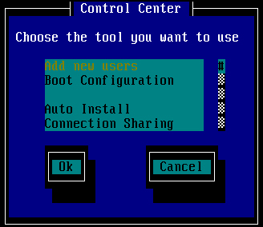
如上为 drakconf 的主要图示，在这些画面中，除了要您以键盘输入文字的时候会有底线之外，其他的时候，只要移动『上下左右』、『空白』、『tab』及『Enter』等按键操作即可！drakconf 主要仅是将几个小工具汇整成为一个啦！那么这个 drakconf 底下汇整了哪些小工具呢？看看上面的图示，您会发现有底下几个个别的小工具：大概就是这样啦！底下我们分别来说一说各个工具的内容吧：
- Add new users：新增账号工具，您可以参考第十三章的内容；
- Boot Configuration：就是 LILO 跟 Grub 的内容，参考十七章内容；
- Connection Sharing：这个就是鼎鼎大名的 DHCP ( Dynamic Host Configuration Protocol ) 主机的设定啦！就是让您的 Linux 成为 DHCP 主机，可以分配 IP 给同一个网域内的其他计算机呢！
- Display Configuration：设定您的显示模式，也就是在图形接口无法登入的时候，可以用来修正 Xfree86 这个图形用户接口的工具！
- Internet & Network：设定网络啦！包括您的网络卡、主机名等等！
- KeyBoard Configuration：键盘的设定，主要是键盘的格式；
- Mouse Configuration：设定鼠标的类型；
- Add new users：
新增使用者的方法我们都知道直接使用 useradd 再以 passwd username 设定密码即可！这个小工具即是帮我们进行这两个动作，其图示如下所示：
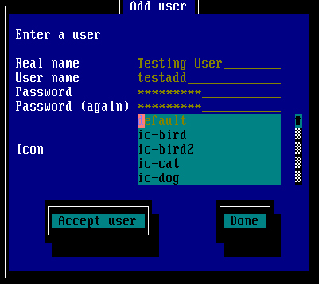 那个 User name 才是『账号』，至于 Real name 则是在 /etc/passwd 当中的第五栏说明栏的内容啦！输入完毕之后就给他 Accept user 即可！
- Boot Configuration
其实这个就是 /usr/sbin/drakboot 这支程序啦！他的功能亦即是我们在开机流程的内容所提到的 LILO 与 Grub 内容，就是进行开机管理啦！按下这个功能之后会出现如下的图示：
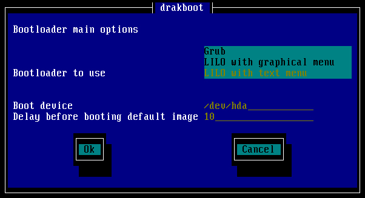 事实上，这个动作可以帮我们设定两个咚咚，第一个是分别设定 /etc/lilo.conf 或 /boot/grub/menu.lst 这两个配置文件，第二个则是将该设定写入 MBR 或 Super Block 当中！记得回到开机流程去瞧一瞧内容即可！当然啦！由于他还可能会帮我们写入 MBR 或 Super Block 呢！所以还是要小心一点呢！
- Connection Sharing
这个动作是在帮我们主机进行 DHCP 设定的各个规划，由于我们尚未提到网站架设的部分，俺可不希望这里随便讲讲，结果您照着这里的作法也随便作作，最后就被怪客随便破解～所以呢，有兴趣的朋 友您可以自行试做看看，其实很简单，照着出现的图样一步一步输入参数就对了！但是什么参数才是对的？呵呵！如果您真的很急的话，那么可以先参考底下的网站 呢：
http://www.study-area.org/linux/servers/linux_dhcp.htm
http://linux.vbird.org/linux_redhat7.2/65dhcp.html
- Internet & Network
但是网络内容就得说一说了，因为如果不作的话，那么您的 Linux 怎么上网呢？OK！这里就来稍微谈一谈吧！现在上网的方式主要有三种，分别是：
- 固定制的 IP：使用的是称为 LAN ( Local Area Network ) 的方法；
- 浮动式的 ADSL ：就是使用 ADSL 呀！
- 浮动式的 Cable ：就是使用 DHCP 呀，同样也是选择 LAN 的方法。
我们先来谈一下比较简单的 LAN 的设定，首先，要使用 LAN 之前，请先确认您的网络参数，分别是：
- Protocol 固定( Static )或动态( Dynamic ) IP 分配
- IP 你的主机地址
- Network 你的主机网域
- Netmask 你的主机子网掩码
- Broadcast 你的主机的广播地址
- Gateway 你的主机所使用的通讯闸
- Hostname 你主机的名字！
- DNS 你需要 ISP 的 DNS 的 IP
其中，在协议(Protocol)的部分要特别注意了，若以 ISP 的角度来看，那么如果协议为 static 则是固定 IP 的设定方式，如果是 Dynamic 则是 Cable 的设定方式！这是因为 Dynamic 就是使用 DHCP 这个协议所造成的啦！好了，现在来看一看按下了 Internet & Network 这一项，会出现如下的图示，这个时候请选择 Configuration the connection 。
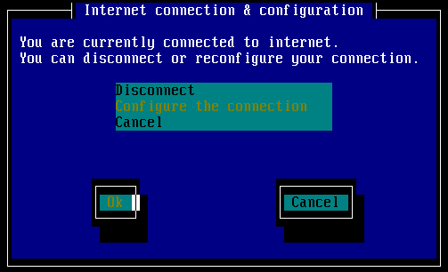
这个时候会出现是否自定义设定或专家模式，然后请按下专家模式：
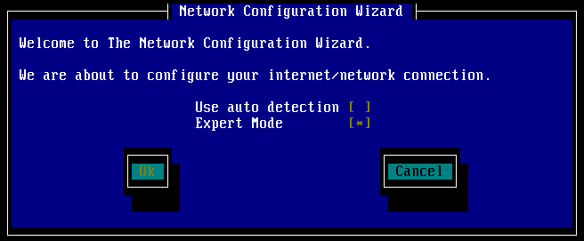
OK！既然要使用 LAN 所以使用 LAN connection 喔！
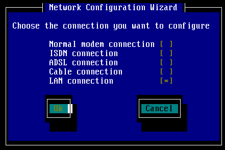
然后出现了硬件的选择项目，如下所示，在下图中显示了两张网络卡的模块，这是因为我有两张网络卡，所以上头会显示两个模块。所以，如果您的主机跟 我的主机网络卡的形式或者是数量不同，那么您主机上面的图样就会跟我不相同啰！注意注意。好了，在下图中问你是否还有其他的网络设备？因为我知道没有其他 的网络卡了，所以当然就选择 No 啰！
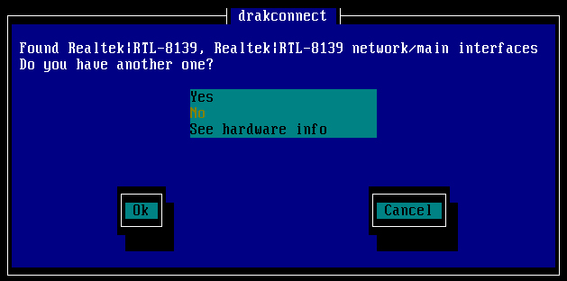
好了，底下要开始给他设定一下你的网络啰！在这个例子中，首先我们使用固定制的方式，使用了 192.168.1.2 这个私有 IP ，然后选择不要 bootp/dhcp ，并且设定在开机的时候启动，因此勾选 Start at boot ！
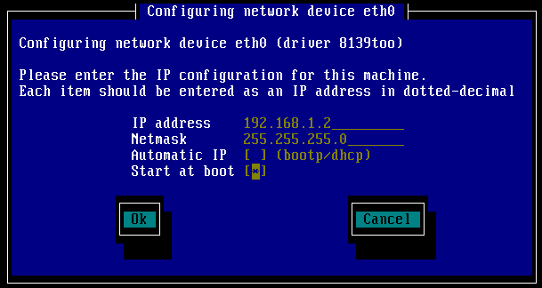
不过，如果你是使用 Cable 的话，或者是您公司有架设 DHCP 主机的话，那么上面的图示中，你就需要选择『Automatic IP 』这一项！而其他的就直接设定的跟我一样即可！这可是很重要的！然后再设定你的主机名与 ISP 给你的 DNS 的 IP，还有 Gateway 或者是 Gateway 的装置！像我是以 eth1 做为对外的网络卡，因此就选择 eth1 啰！
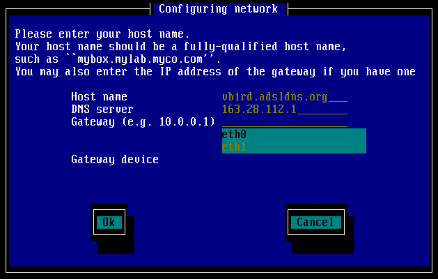
这样就设定 OK 啦！其实，以上的步骤就只是设定底下几个档案：
- /etc/sysconfig/network
- /etc/sysconfig/network-scripts/ifcfg-eth0
- /etc/resolv.conf
我们在网络架设篇再来聊一聊如何设定这些数据，包括使用手动的方式设定固定 IP 、 Cable 与 ADSL 上网的方式！
这些就是 drakconf 的主要功能了！当然，还有 X-window 里面的 XFree86 的硬件配置！不过，这些数据我们就在 X-Window 章节里面再提啰！
Red Hat 基本系统设定指令
- 在 Red Hat Linux 里头有一个相当好用的系统参数设定工具，那就是大家都耳熟能详的『
setup
』啰！这工具说穿了也没有什么特殊的地方，就是他将一些
/etc/sysconfig
里的设定参数给他做成图形界面就是了！基本上，如果你对系统熟的话，那么不需要使用
setup 也是可以的啦！直接修改 /etc/sysconfig 底下的东西就可以啰！
setup：
我们先来说一说 setup 的用法吧！以 root 的身份在 command line 输入 setup 就可以进入如下的画面：主要有底下几个设定的咚咚：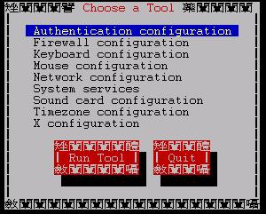
- Authentication configuration：这是关于系统性安全的设定项目；
- Firewall configuration ：这个是关于 ipchains 的防火墙机制设定；
- Keyboard configuration ：这个是键盘的类型设定项目；
- Mouse configuration ：设定鼠标的型态的地方啦；
- Network configuration ：设定网络参数的地方，包括你的 IP 呦！
- System services ：设定一些系统服务的地方；
- Printer configuration ：设定打印机啰；
- Sound card configuration ：就是设定声卡啦！
- Timezone configuration ：设定时区；
- X configuration ：设定 X-Window 相关的硬件配置！
- 依序介绍一下里面的各种资料啰：
- Authentication configuration ：
还记得我们在 账号管理 那一篇文章里面提到的东西吗？对啦！我们在管理密码的时候就是使用那个 shadow 的资料！好啦，那么怎么改变这些密码数据的设定呢？呵呵！就是在这一项啰！按下他之后会出现底下两个画面：
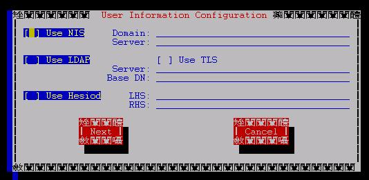 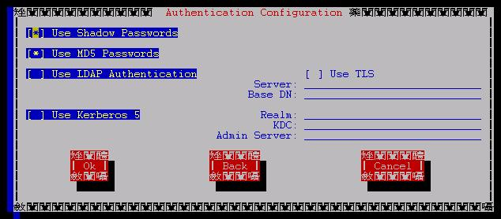 那个 NIS, LDAP, Hesiod 等等都是其他类型的 ID 与 pass word 管理服务器，这里我们不太需要使用到这么高级的服务器！所以只要简单的 Shadow 与 MD5 这两个编码过的安全防护即可！所以啰，您可以在这里勾选 Shadow 与 MD5 就行了！除非后来您还想要加入上述的服务器！( 注：这个项目完成之后，会写入/etc/sysconfig/authconfig这个档案当中！所以也可以直接修改这个档案即可！)
- Firewall configuration ：
这是用来设定防火墙的！
- 在设定防火墙之前需要来了解一下什么是『防火墙』？简单的说，防火墙就是资料封包的过滤机制的套件啰，目前在 2.2.xx 上面使用的是 ipchains 这个封包过滤，至于 2.4.xx 则使用的是 iptables 这个封包过滤机制。此外，这两个封包过滤机制『不能同时开启』！
但是在这个 setup 当中的 firewall 比较诡异一点点，就是在 Red Hat 7.1 以后的版本中（包含这一版的 Red Hat 7.2 ）使用的 Kernel 是 2.4.xx 版本，这一版的适合的防火墙如前述是 iptables 这个机制，但是
- 这支程序使用来设定的却是『 ipchains 』真是的～～而且，另外一点比较怪异的是，
- 这个程序启动之后，所显示的是『程序默认值』而不是您目前的设定值，所以每次进入都会显示『Security Level 为 ( ) High 那一项！，不过，只要不按下 OK 的话，就不会改变您原先的设定！
基本上，这个东西用来设定 ipchains 是可以啦，但是用来设定 iptables 则『没有办法』，最起码我试不出来，如果您试出来的话，可得教教我呦！按下之后显示出来的样子如下：
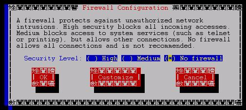 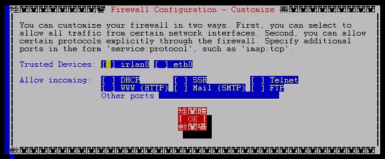 请注意，在上面的设定当中，是适合于 ipchains 的，再强调一次，所以如果您使用了 iptables 作为您的防火墙机制，那么就不要使用这支程序了！另外，在第二个画面中，需要特别注意的是：
- 如果您只有一张卡（例如上面的例子），那么千万注意『不要开启 eth0 』这个咚咚！上面的意思是说，『来自底下的界面卡(例如 eth0)或者是底下的 port 号，则予以接受』，那么当您接受 eth0 的请求，偏偏这个卡是对外卡，那么由于所有的要求都是由外界来的，所以底下的设定则完全没有用了！因为检查到界面卡的部分就予以放行的意思！这里请注意！
- 万一，若您有两张网络卡，一张对内（假设为 eth0 ）一张对外（假设为 eth1 ），那么对内信任对外不信任，则可以勾选 eth0 为信任的（沟成星号），而 eth1 则不勾！
那么这个设定在产生什么配置文件案呢？
- 这个设定完成之后，会在 /etc/sysconfig 产生一个名为 ipchains 的档案，这个档案即是开机时启动的配置文件，您可以查询到 /etc/rc.d/init.d/ipchains 这个启动档案的内容看到！！
- 同理，如果您想要一开机立即将您的 iptables 机制的规则写上去的话，那么就可以在 /etc/sysconfig/ 建立一个名为 iptables 的档案啰！
- Keyboard configuration ：
这是用来设定键盘型式的！如下图所示：
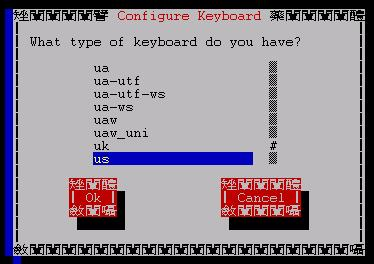
选择正确的即可！通常我们选择 us 这一个就对了！(注：修改的结果会记录在 /etc/sysconfig/keyboard 这个档案中！)
- Mouse configuration：
这是用来设定鼠标的！按下去之后会显示出下面的图标：
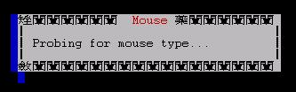 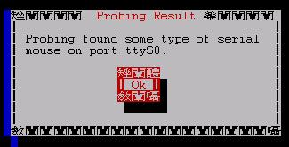 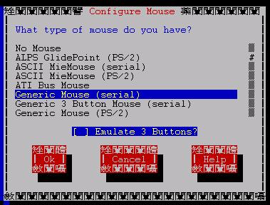 看到了喔！如果是 ps/2 的接口的话，那么上面就会显示出 Generic Mouse (PS/2) 的那一项！请依照您的硬件来设定好你的鼠标周边！( 这个项目会在 /etc/sysconfig/mouse当中记录下来正确的鼠标型态，可以直接修改这个档案呦！)
- Network configuration :
这东西是用来设定网络的东西的！按下他之后会出现底下的咚咚：
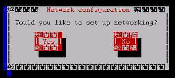 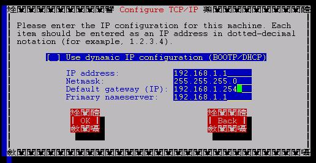 所谓的 DHCP 是一种动态发放 IP 的主机，来分给 client 计算机 IP 的方式！那么由于我们使用的是虚拟 IP 这一种静态的 IP 给予方式，所以自然就将第一个取消啰！另外，需要特别留意的是，使用 Cable 的朋友就是以 DHCP 来上网的，所以其对外的卡使用的就得是 DHCP 协议啰！然后需要来设定 IP （给予虚拟 IP 即可！）子屏蔽网络（ netmask）及 gateway 等等，这个咚咚会修改到的档案有：
- /etc/sysconfig/network
- /etc/sysconfig/network-scripts/ifcfg-eth0
- /etc/resolv.conf
大概就是如此吧！所以，基本上，手动修改上面这些档案即可设定好网络的基础架构啰！
- System services ：
这个东西也蛮好玩的，其实他就是 ntsysv 这个程序啦！按下他之后会显示出底下的框框！
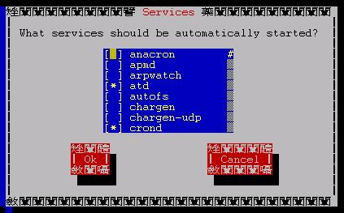
这里显示的是，目前系统上以 RPM （或者是你自己写的）可以进行『开机时后启动的』服务项目，以这张图表为例，显示出 atd 这支服务在启动的时候就会自动的启动啰！所以你可以移动到你所想要启动的项目之前，按下空格键使产生 * 后，再按下 OK 即可！不过需要注意的是：
- 这个设定仅是在设定『启动的时候可以自动执行』的服务，所以当你设定好 * 之后，除非重新启动，否则仍需要直接以手动启动才行；
- 这个设定所捉出来的服务项目，其内容都列在 /etc/rc.d/init.d 及 /etc/xinetd.d这两个目录内；
- 这个设定设好之后，其连结会在 /etc/rc.d/rc#.d/Sxxservername 这个档案内，例如我以文字型态登入的，所以 run-level 为 3 ，而我要设定的是 atd 这个服务，所以就会在 /etc/rc.d/rc3.d/S95atd 这个连结档建立到 /etc/rc.d/init.d/atd 这个执行 script 中！请注意，那么 S 代表开机启动的意思，而数字代表执行的顺序！
- Printer configuration ：
设定 printer 的步骤！按下去之后可以出现如下的咚咚：
这个我就不是很熟悉了！请有经验的朋友来信告诉我该怎么做吧！

- Sound card configuration ：
设定声卡啰！那就设定吧！
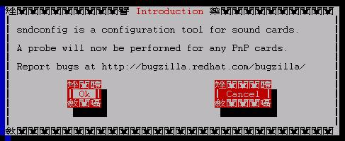
- Timezone configuration ：
还记得我们选择的时区吗？呵呵！想不想改变呢？
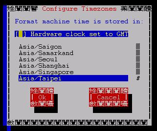
建立的数据写在 /etc/sysconfig/clock 里头！
/etc/sysconfig/* 里头的配置文件案：
- 刚刚提过了，那个 drakconf 与 setup 这两支工具软件都是在设定 /etc/sysconfig
里面的档案，所以我们就得来看看这些目录里面的档案是干嘛用的？我们底下只说明几个可能会用到的档案，并介绍该档案的用途（注：由于不同的
distribution 当初在设计的理念多少有点不同，因此，在开机启动的设定项目中，就会有些许的差异！所以，在
/etc/sysconfig 里面的档案，在各个 distribution 当中，多少也有点差异性，故而请注意您使用的版本呢！不过，底下还是列出大部分您可以察看的到的档案吧！
^_^
|
|
|
| authconfig | 系统用户所使用的认证方式，或者说是系统用户使用以登入主机的密码管理方式。目前最常见的就是每部主机自己管理自己，也就是
/etc/shadow 这个档案，以及底下会再提到的档案认证方式 MD5 的编码格式！通常档案的内容为：
USELDAP=no <==是否使用 LDAP USEMD5=yes <==是否使用MD5 USENIS=no <==是否使用NIS USESHADOW=yes <==是否使用 shadow |
| autofsck | 当系统出现问题的时候，通常系统会自动的执行 fsck ，但是当这个档案存在的时候，那么系统就会依据这个档案的内容来决定是否需要以
fsck 来检查硬盘数据！
AUTOFSCK_TIMEOUT=5 <==暂停时间等待输入
|
| clock | 记录时区的档案内容：
UTC=true
<==设定时区为以 GMT 时区的设定
|
| gpm | 纪录一些额外的接口设备的档案数据，例如鼠标！这个服务可以让您在文本模式下能使用鼠标来进行复制、剪贴等等的功能！ |
| harddisks | 要开启 IDA 模式吗？要启动 16 I/O 模式吗？没错！使用这个档案来设定就对了！尤其是档案里头的 USE_DMA=1 ，应该是可以直接启动的啦！（将 # 去除！）这东西与 hdparm 程序有点关系的啦！ |
| hwconf | 在你启动 Linux 的时候，不是有侦测硬件的项目吗？没错，侦测到的硬件就是记录在这里，所以，如果要了解你的硬件信息，来这个档案看一看就知道了！（注：需要对于硬件如芯片组有点了解的人才比较容易看懂！）这东西与 hdparm 程序有点关系的啦！ |
| i18n | 修改预设语系的地方！很多朋友常常提到，如果预设语系选择中文，偏偏文本模式下无法正常显示，那么就修改这里的设定即可！将 LANG 的设定改成 en_US 即可！不过，有没有支持还是得看这个档案里头的 SUPPORTED 项目才行！ |
| keyboard | 设定键盘的形式； |
| kudzu | 设定开机时后侦测新装置的方式！ |
| mouse | 设定鼠标的形式 |
| network | 设定你的网络状态，例如 gateway, hostname 等等的地方！相当重要！ |
| network-scipts | 所有的适配卡配置文件案的地方！例如 ifcfg-eth0 ！相当的重要！ |
| rhn | 设定一些 up2date 在线更新的注册数据！( Red Hat 上才有！) |
| iptables | （不一定会存在的档案）这个档案为开机时启动防火墙规则的规则档案！ |
其他的咚咚不是不重要，而是我仅列出比较相对重要的咚咚！
注：很多档案都必须要您的系统中有设定启动才会存在该档案，例如 iptables
即是一例！
系统启动服务工具：ntsysv, service, chkconfig, init,
大家一定都有：『咦！我某些服务在开机的时候启动，要怎么开始？』的疑问吧！？像我一开始玩 Linux 的时候，就对这个问题很有兴趣！嘿嘿！完到最后才终于晓得，原来开机能不能执行跟你的 /etc/rc.d/init.d 里头的服务设定项目有关，例如我要立刻就启动 apache ，那么 apache 的启动 script 称为 httpd ，所以要启动他就需要：/etc/rc.d/init.d/httpd start此外，一开机是否立刻启动则是设定在 /etc/rc.d/rc[0-6].d 这总共七个目录下的数据中！我们当然可以手动来进行连结档案，使他符合我们所需要的特性，但是我们也可以透过 Linux 给我们的设定工具来执行呦！
- ntsysv
说明：
[root @test /root]# ntsysv [--level run-level]
参数说明：
--level ：可以设定每一个 run-level 的开机启动项目
范例：
[root @test /root]# ntsysv <== 目前的 run-level 下的设定
[root @test /root]# ntsysv --level 5 <== 不同 run-level 下的设定修改
这支工具蛮有意思的！他可以设定开机时后启动的项目呢！就是在 setup 里头的 System Services 那个设定的地方！比较不一样的地方在于，这个单独的程序还可以执行非目前 run-level 的启动项目。如果您回到前面提到的『开机流程』的地方，那么就会发现在启动的项目方面，需要取得 inittab 之后，才能在各个 /etc/rc.d/rc#.d 里头执行各不同的 scripts ，其中常用的 run-level 是 3 及 5 （文字与图形！）。那么 ntsysv 就可以依据：
- /etc/xinetd.d
- /etc/rc.d/init.d
这两个文件夹内的 scripts ，然后配合 /etc/rc.d/rc#.d 里头的 scripts 来进行连结档的设定！
- service
说明：
[root @test /root]# service [service name] [start|stop|restart]
参数说明：
service name ：这个服务名称必须要实际存在 /etc/rc.d/init.d 这个目录下才行
start|stop.. ：基本上，这个与 /etc/rc.d/init.d/service_name 所允许的启动形式有关！
范例：
[root @test /root]# service xinetd restart <==重新启动 xinetd
[root @test /root]# service sendmail start <==启动 sendmail 这个服务！
这个程序就更简单了！基本上他只是一支 script 而已！他会将 /etc/init.d （其实就是 /etc/rc.d/init.d ）的东西取出来，然后进行分析啦！例如上面的例子中，[ service xinetd restart ] = [ /etc/rc.d/init.d/xinetd restart ]这两个是完全相同的东西呦！只是 service 把他更简化了而已！除此之外，在 ntsysv 与底下接着要说明的 chkconfig 都是『等到下次开机的时候再启动』的方式，那么有没有办法立刻启动呢？呵呵！那就是 service 的工作啦！ service 可以直接将该服务启动呦！
- chkconfig
说明：
[root @test /root]# chkconfig [--level levels] [--list|add|del] [service name]
参数说明：
--level ：同样的说明了可以设定不同的 run-level 的咚咚！
--list ：列出 run-level 情况下的该套件名称是否有被开机启动？！
--add ：增加一个 service_name 在开机的时候启动；
--del ：删除一个开机启动的服务！
service name ：这个服务名称必须要实际存在 /etc/rc.d/init.d 这个目录下才行
范例：
[root @test /root]# chkconfig --list sendmail <==列出 sendmail 的启动！
sendmail 0:off 1:off 2:on 3:on 4:on 5:on 6:off
上面说明， sendmail 在 run-level 0, 1, 6 的时候是 off ，而在 2,3,4,5 是 On 的情况！[root @test /root]# chkconfig <==列出系统所拥有的执行服务，并且列出是否开机启动？
keytable 0:off 1:on 2:on 3:on 4:on 5:on 6:off
atd 0:off 1:off 2:off 3:on 4:on 5:on 6:off
kdcrotate 0:off 1:off 2:off 3:off 4:off 5:off 6:off
syslog 0:off 1:off 2:on 3:on 4:on 5:on 6:off
gpm 0:off 1:off 2:on 3:off 4:on 5:on 6:off
kudzu 0:off 1:off 2:off 3:off 4:on 5:on 6:off
sendmail 0:off 1:off 2:on 3:on 4:on 5:on 6:off
netfs 0:off 1:off 2:off 3:off 4:on 5:on 6:off
network 0:off 1:off 2:on 3:on 4:on 5:on 6:off
random 0:off 1:off 2:on 3:on 4:on 5:on 6:off
rawdevices 0:off 1:off 2:off 3:off 4:on 5:on 6:off
apmd 0:off 1:off 2:on 3:off 4:on 5:on 6:off
ipchains 0:off 1:off 2:on 3:off 4:on 5:on 6:off
iptables 0:off 1:off 2:on 3:on 4:on 5:on 6:off
crond 0:off 1:off 2:on 3:on 4:on 5:on 6:off
anacron 0:off 1:off 2:on 3:off 4:on 5:on 6:off
xinetd based services:
chargen-udp: off
chargen: off
daytime-udp: off
daytime: off
echo-udp: off
echo: off
time-udp: off
[root @test /root]# chkconfig --add gpm <==增加 gpm 这个咚咚在开机的时候启动！
chkconfig 这个程序可以将 /etc/rc.d/init.d/ 里面的可执行服务与 /etc/xinetd.d 里面的相关可执行的服务，连结到目前的 run-level 里头去，或者是您可以定义你的 run-level 让你的该项服务在开机的时候就给他启动?不过请注意呦！ service 是马上让你的该项服务立刻启动，但是 chkconfig 则仅是设定某个服务在开机得时候可以被启动，并不一样，请注意ㄋㄟ！
- init
说明：
[root @test /root]# init [0-6]
参数说明：
范例：
[root @test /root]# init 5 <==转为图形接口登入！
说完了 /etc/rc.d/rc[0-6].d 与 /etc/rc.d/init.d 的执行序之后，呵呵！如何切换呢？是否一定要修改 inittab 这个档案？！其实不需要，直接使用 init 这支程序就行了！
2002/06/16：第一次完成
2003/02/11：重新编排与加入 FAQ
Designed by VBird during 2001-2004. Aerosol Lab.
本网页主要以Firefox配合解析度 1024x768 作为设计依据 鸟哥自由软件整合应用研究室